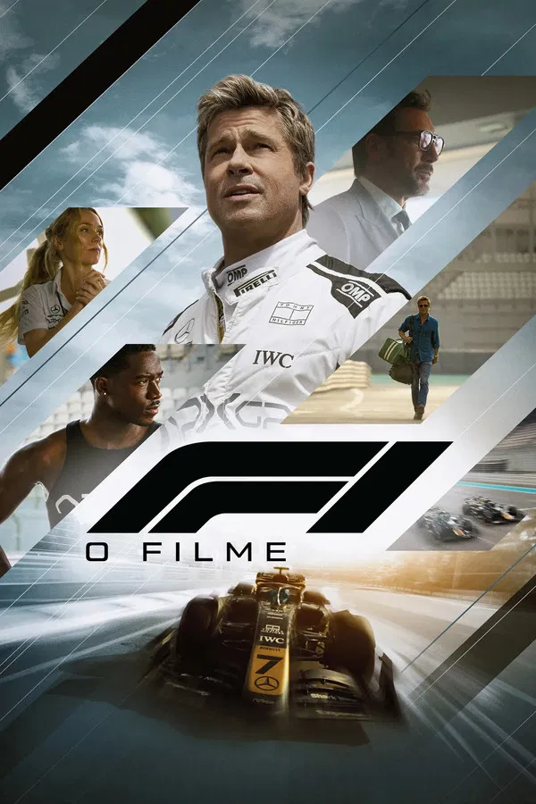
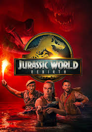
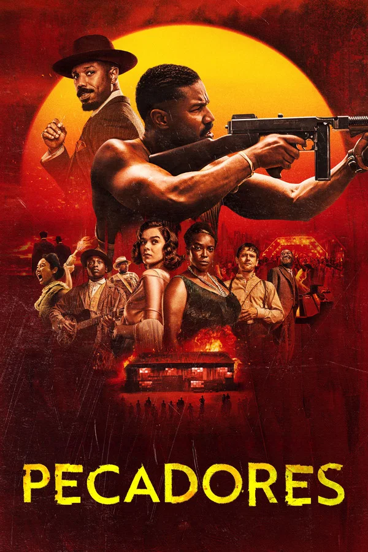
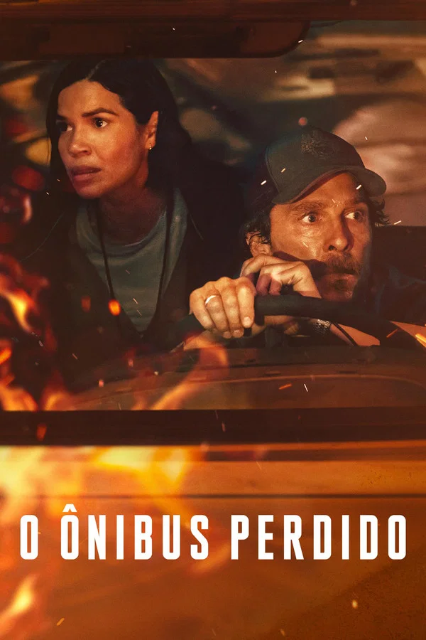

98th Annual Academy Awards
Melhores Efeitos Visuais
Conheça os candidatos à Premiação do Oscar 2026 por Melhores Efeitos Visuais.
Vencedor
Avatar: Fire and Ash
O Trabalho: O foco aqui é a simulação de fogo, fumaça e cinzas em ambientes digitais, algo historicamente difícil de renderizar com perfeição. A interação dessas partículas com a pele dos Na'vi e os novos ecossistemas vulcânicos é revolucionária.
Destaque Técnico: O aprimoramento do Performance Capture subaquático e em ambientes de calor extremo (simulado), criando uma fidelidade emocional nos personagens que desafia o "vale da estranheza".

F1: O Filme
O Trabalho: Foram desenvolvidas câmeras minúsculas de 6K para serem colocadas dentro dos cockpits, mas os efeitos visuais brilham na extensão digital das pistas, na multidão gerada por IA e na remoção digital de equipamentos de segurança que não poderiam aparecer na tela.
Destaque Técnico: A integração perfeita entre os carros reais correndo a 300 km/h e as adições digitais de outros veículos na pista durante manobras perigosas demais para dublês.

Jurassic World: Rebirth
O Trabalho: Edwards utiliza sua experiência em Godzilla e The Creator para mesclar locações reais com criaturas digitais que possuem peso e textura tangíveis. Há um uso massivo de iluminação global para que os dinossauros pareçam realmente integrados à luz natural das selvas e cidades.
Destaque Técnico: A animação muscular dos dinossauros, que mostra cada fibra se movendo sob a pele, e a interação direta com elementos práticos (chuva, lama, folhagem).

Pecadores (Sinners)
O Trabalho: Menos focado em grandes explosões e mais em efeitos de criatura e distorções atmosféricas. O uso de fumaça digital e sombras que parecem ganhar vida própria é essencial para o terror do filme.
Destaque Técnico: A transformação fluida e perturbadora das entidades malignas, que mistura captura de movimento com distorções digitais que desafiam a física comum.

O Ônibus Perdido (The Lost Bus)
O Trabalho: A criação de um incêndio florestal massivo e realista que cerca o ônibus durante todo o filme. É um trabalho de simulação de fluidos e fogo que precisa transmitir calor e perigo constante sem parecer artificial.
Destaque Técnico: A composição de cenas onde o ônibus real é integrado a um inferno digital de chamas e brasas, mantendo a visibilidade dos atores e a clareza da ação em meio ao caos visual.